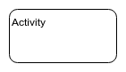
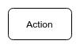
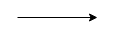
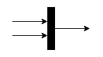
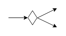
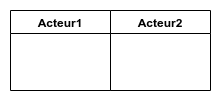

An Activity is a kind of Behavior that is specified as a graph of nodes interconnected by edges.
- Object Management Group
Le diagramme d'activité est un diagramme permettant de représenter le déclenchement d'événements en fonction des états du système et de modéliser des comportements parallélisables. Le diagramme d'activité est également utilisé pour décrire un flux de travail (workflow).
- Wikipedia
| Nom | Représentation | Description |
|---|---|---|
| Activity |  | Elément permettant de regrouper un ensemble d'actions. |
| Action |  | Elément permettant de représenter une tâche. |
| Initial Node |
Représente le début d'un ensemble d'actions. |
|
| Activity Final Node |
Représente la fin d'un ensemble d'actions. |
|
| Flow Final Node |
Représente la fin d'un sous-ensemble d'actions. |
| Nom | Représentation | Description |
|---|---|---|
| Object Flow |  | Représente les échanges entre les objets et actions. |
| Fork / Join Node |  | Permet de joindre ou diviser un flux d'activités qui s'exécuteront en parallèle. |
| Decision / Merge Node |  |
Représente une condition pouvant entraîner deux chemins différents. |
| Swimlane |  |
Permet d'identifier les acteurs dans un diagramme d'activité. |